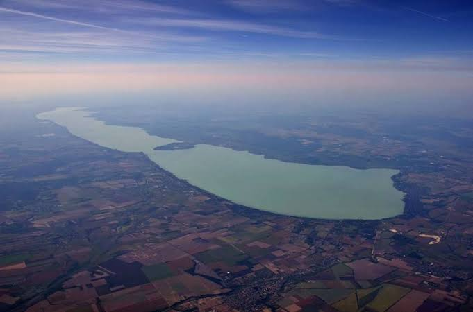

Balaton – Közép-Európa legnagyobb tava, amelyet gyakran a „magyar tengernek” neveznek, és népszerű helyszíne a vitorlázásnak, szörfnek valamint a fürdésnek

A Balaton hossza kb. 77 km, szélessége 1,3 km és 14 km között változik. A Balaton parthossza 195 kilométer, s érdekessége, hogy már a rómaiak is szabályozták a vizét. A Balaton mai formáját a 19. században nyerte el a tó partján futó vasúti töltések kialakítása során. A Balaton átlagos mélysége kb. 3 méter, legmélyebb pontja a Tihanyi kútnál 12,5 méteres. A déli part jóval sekélyebb, itt kb. 300 métert is gyalogolhatunk a mélyvízig.
tudj meg többet
| Tó | Vármegye | Jellemzők |
| Balaton | Somogy, Veszprém, Zala | Közép-Európa legnagyobb tava (kb. 594–600 km²), sekély, gyorsan felmelegedő nyári vízzel. |
| Tisza-tó | Heves, Jász-Nagykun-Szolnok, Borsod-Abaúj-Zemplén | Magyarország legnagyobb mesterséges tava / víztározója (kb. 127 km²), mozaikos vadvízi világgal. |
| Fertő tó | Győr-Moson-Sopron | Ausztriával közös, sekély sztyepptó, melynek teljes területe 309 km², ebből nagyjából 75–88 km² esik magyar területre, az UNESCO világörökség része. |